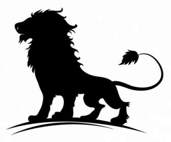
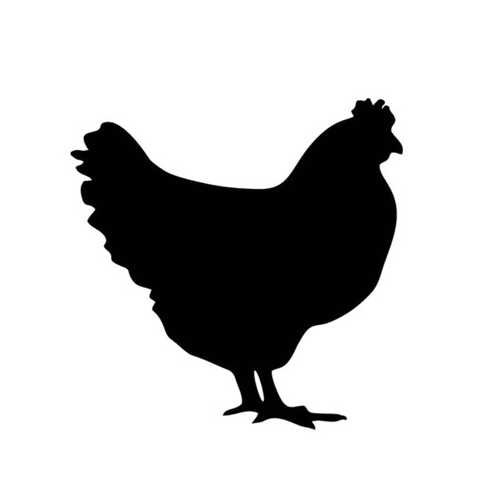
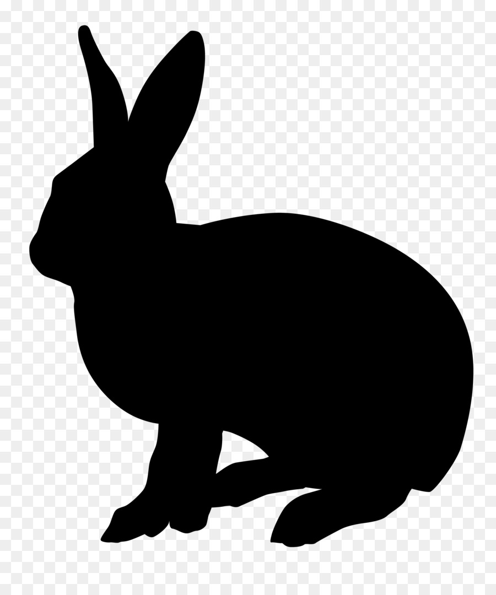

|  | Singa (Panthera Leo) |
||||
| Jumlah Kaki | Jenis Berdasarkan Makanannya | Spesies | Cara Berkembangbiak | Hewan Mamalia? | |
| 4 | Karnivora | Felidae | Beranak(Vivipar) | Ya | |
|  | Ayam (G. Gallus Domesticus) |
||||
| Jumlah Kaki | Jenis Berdasarkan Makanannya | Spesies | Cara Berkembangbiak | Hewan Mamalia? | |
| 2 | Omnivora | G. Gallus | Bertelur(Ovipar) | Tidak | |
|  | Kelinci (Oryctolagus Cuniculus) |
||||
| Jumlah Kaki | Jenis Berdasarkan Makanannya | Spesies | Cara Berkembangbiak | Hewan Mamalia? | |
| 4 | Herbivora | Leporidae | Beranak(Vivipar) | Ya | |